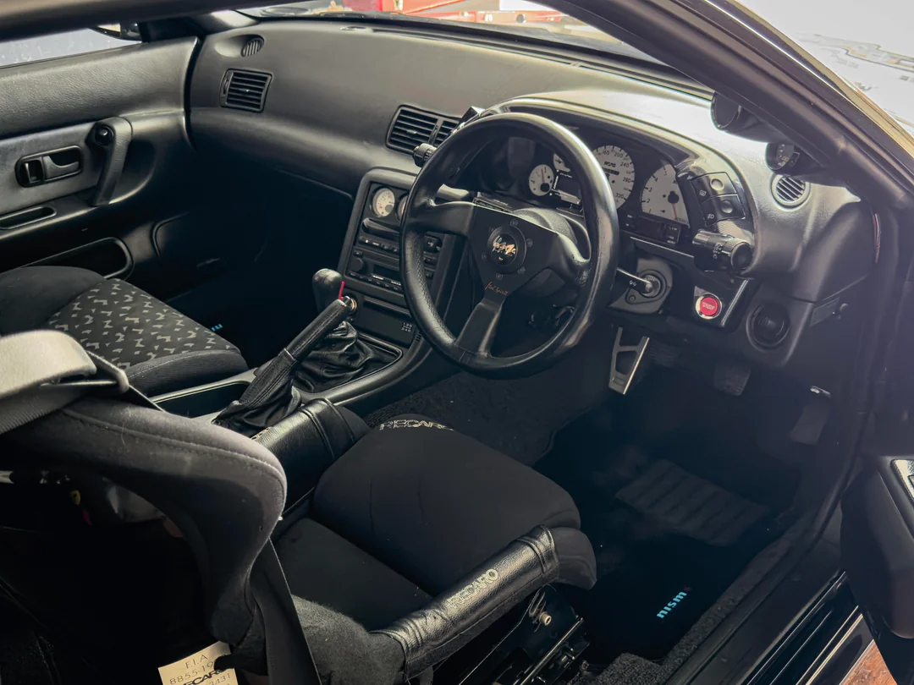
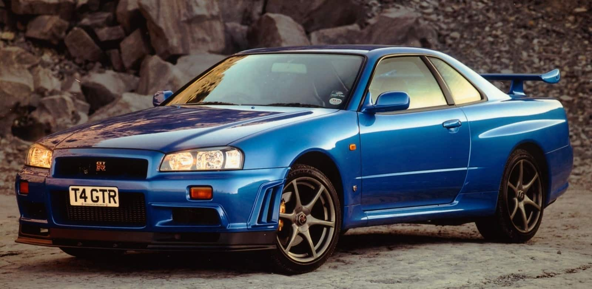
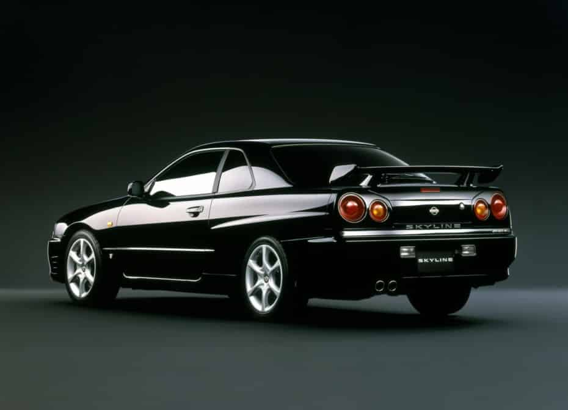
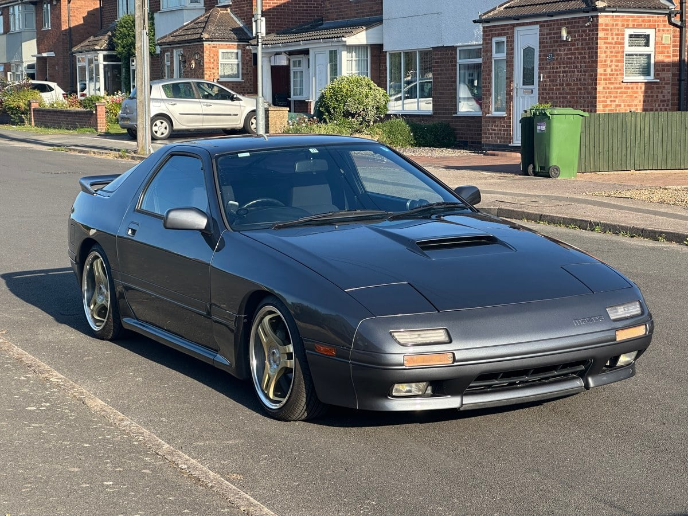
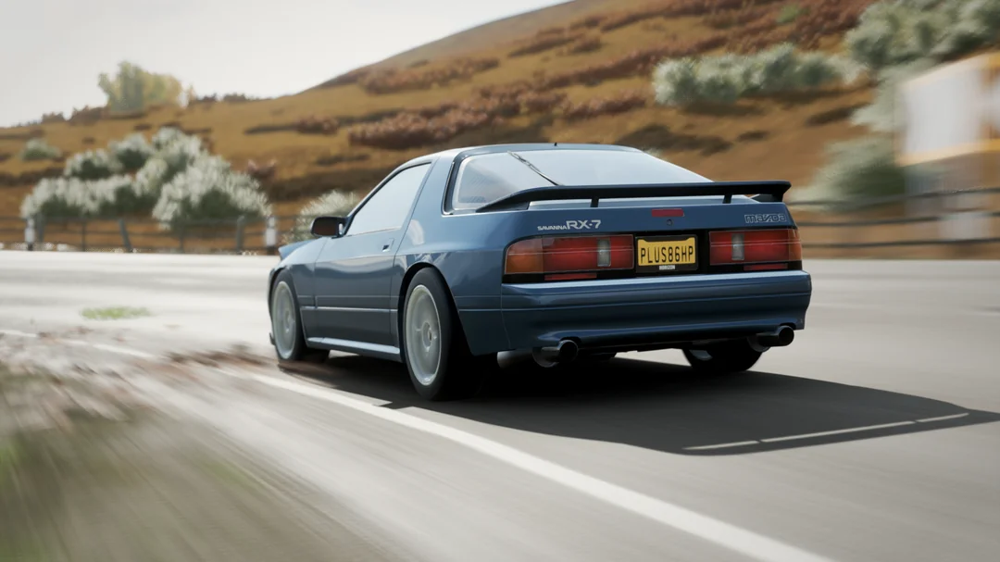
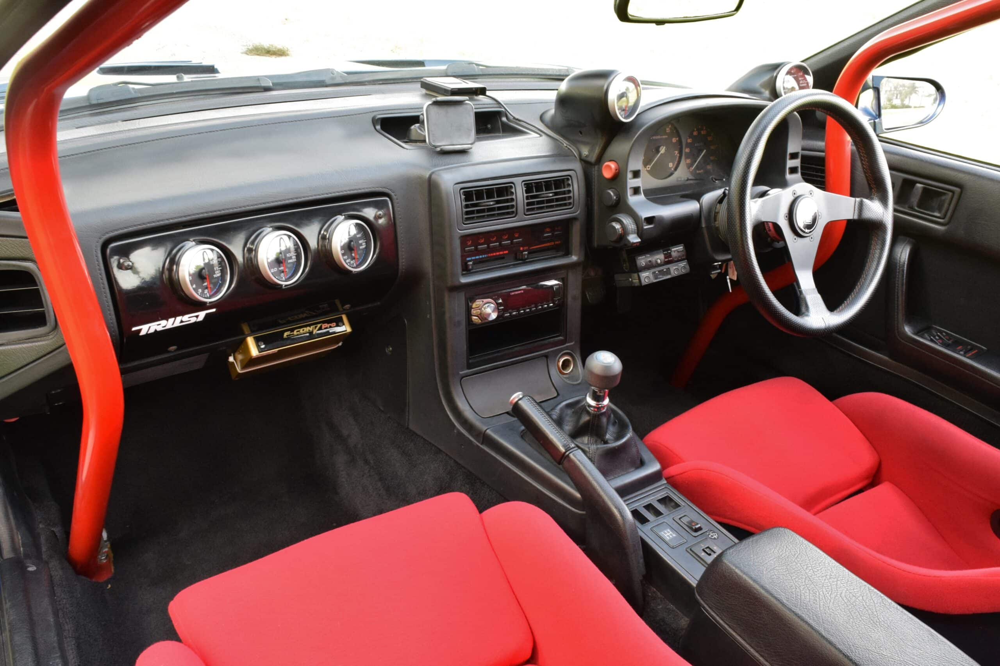
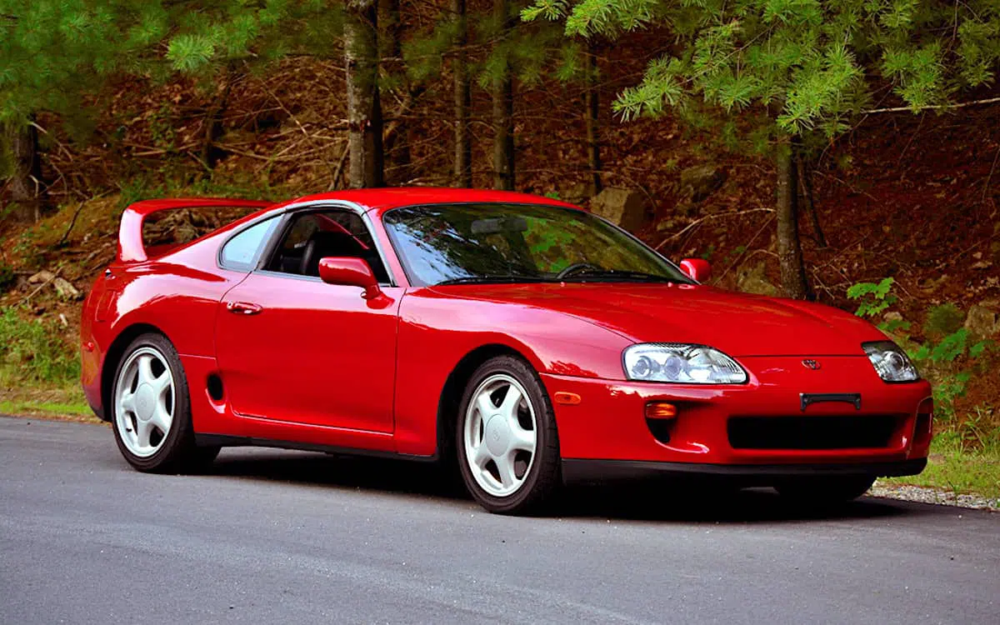
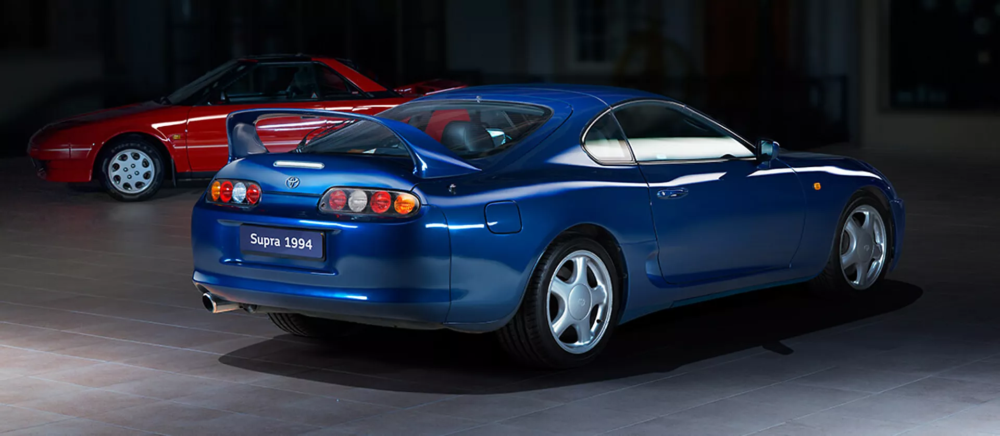
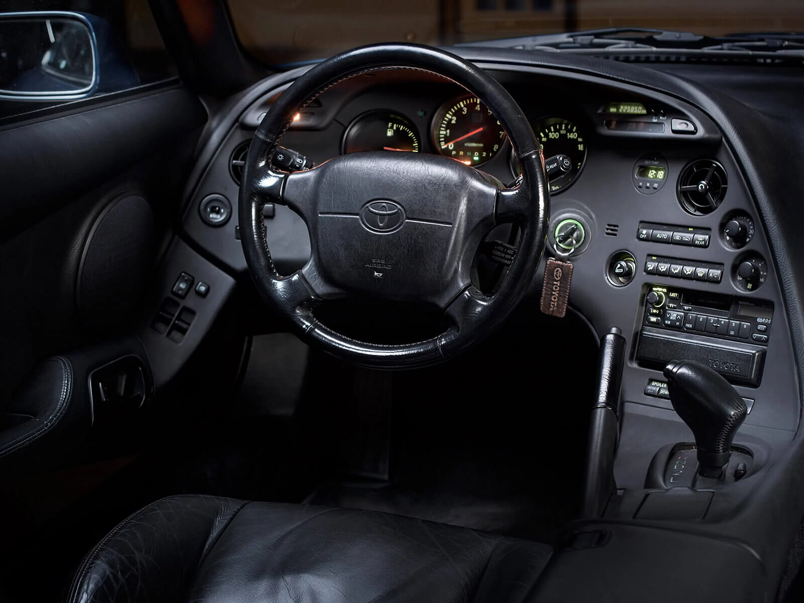

Nissan Skyline GT-R R34

Nissan Skyline GT-R R34
Motor RB26DETT, 280 CV
Tracción integral AWD



Motor RB26DETT, 280 CV
Tracción integral AWD



Motor Rotary 13B-REW, 265 CV
Diseño único y ligero




Motor 2JZ-GTE, 326 CV
Leyenda del tuning

